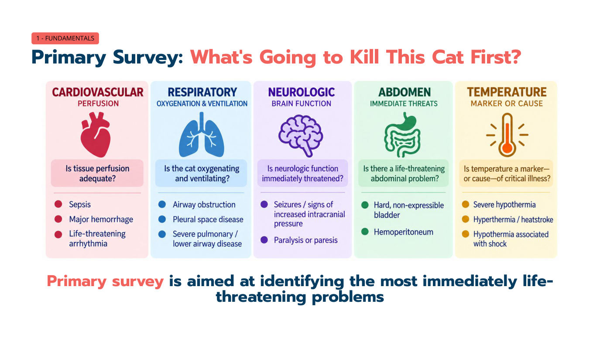
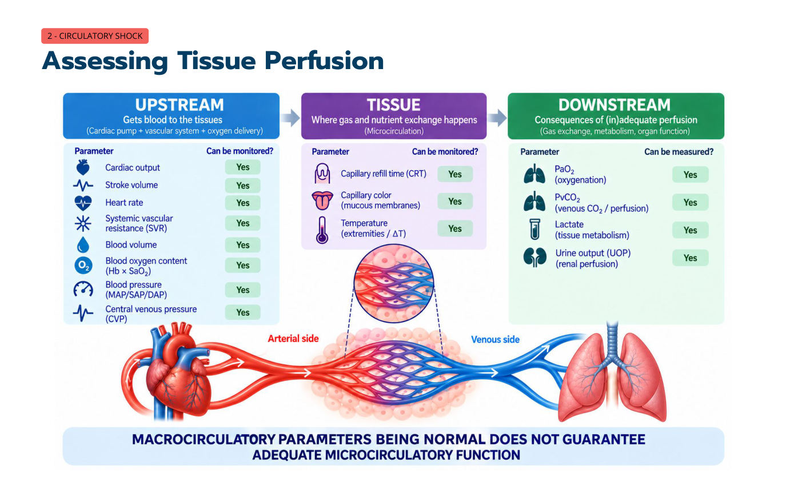

休克基礎：貓的休克，哪些是舊觀念、哪些是新證據
主講：Elise Boller, DVM, DACVECC
TSFM Annual Conference 2026｜Day 1 — The Crashing Cat: Recognition, Resuscitation & Rescue｜Session 1｜場次 01
資料來源標記：
投影片（數字＝講義 PDF 頁碼）
💡 補充 整理者補充（機轉、換算、交叉參照；不是講者說的）
目前只有講義，沒有課堂錄音；講義上的影片（Vimeo）與現場投票無法收錄。
目前只有講義，沒有課堂錄音；講義上的影片（Vimeo）與現場投票無法收錄。
⭐ 必記原則
- 休克＝氧氣輸送與消耗失衡，結果是細胞能量（ATP）產生不足；不是「血壓低」的同義詞
- 先做 Primary survey：心血管、呼吸、神經、腹部、體溫，找出最先會讓貓死掉的問題
- 貓不是小狗：休克的貓常見心搏正常或過慢、低體溫、黏膜蒼白，幾乎不會出現狗那種磚紅色黏膜
- 貓分布性休克的「休克器官」是肺（狗是腸胃道與肝臟）
- 脫水 ≠ 灌流不足：脫水重要但不致命；灌流不足（休克）要立刻處理
- Shock index（HR/SBP）在貓不可靠；創傷貓的 直腸–趾間溫差（RISG）與 ATT 分數更能預測預後，乳酸看趨勢
- 多種休克可以同時存在；分類的目的是決定治療——輸液可能救命，也可能害死貓（如心因性休克）
- 大循環參數（血壓、心跳）正常，不保證微循環灌流足夠
場次資訊與學習目標
▾- 講者 Elise Boller，DVM、DACVECC（美國獸醫急診與重症專科）。TSFM 2026 年會兩天課程的主講者，本系列 10 場都是她的課。
- 開場互動：「飼主在急診抱來一隻非常虛弱、倒下的貓，你內心的狀態是？只能用 emoji 回答。」——承認面對休克貓會緊張是正常的，這堂課要給一套有系統的思考流程。
學習目標
| # | 目標 |
|---|---|
| 1 | 說明 Primary survey，並用它找出立即致命的問題 |
| 2 | 定義休克，並以細胞能量衰竭的角度做功能性分類 |
| 3 | 區分貓與狗的休克臨床表現——貓的表現根本上不同 |
| 4 | 依嚴重度與類型，用系統化流程辨識與處理休克 |
| 5 | 分辨哪些休克適合給輸液、哪些禁止給輸液 |
| 6 | 回顧近年貓休克診斷與預後的新證據 |
1. Primary survey：什麼會最先殺死這隻貓？
▾五個系統、五個問題

| 系統 | 要問的問題 | 立即致命的例子 |
|---|---|---|
| 心血管（灌流） | 組織灌流足夠嗎？ | 敗血症、大出血、致命性心律不整 |
| 呼吸（氧合與通氣） | 貓有在氧合、有在通氣嗎？ | 上呼吸道阻塞、肋膜腔疾病、嚴重肺實質／下呼吸道疾病 |
| 神經（腦功能） | 神經功能是否立即受威脅？ | 癲癇、顱內壓上升徵象、癱瘓或輕癱 |
| 腹部 | 有立即致命的腹腔問題嗎？ | 硬而擠不出來的膀胱（尿道阻塞）、血腹 |
| 體溫 | 體溫是重症的標記還是原因？ | 嚴重低體溫、高體溫／熱衰竭、伴隨休克的低體溫 |
💡 補充 這就是急診常說的「ABC + 神經 + 腹部 + 體溫」快速評估；目的不是確診，而是排出處理的先後順序。完整病史與身體檢查（secondary survey）等穩定後再做。
2. 休克是什麼？兩大類、六種型態
▾定義與後果連鎖
休克：氧氣輸送與氧氣消耗失衡，導致細胞能量產生下降。
後果連鎖：O₂ 輸送或利用失敗 → 細胞功能異常 → 器官衰竭（MODS／MOF） → 死亡。一旦連鎖開始，能介入的時間窗很窄。
兩大類
循環性休克（Circulatory）
- 低血容性 Hypovolemic
- 分布性 Distributive
- 阻塞性 Obstructive
- 心因性 Cardiogenic
非循環性休克（Non-circulatory）
- 低氧性 Hypoxic
- 代謝性 Metabolic
沒有完美的分類法——多種型態可以同時存在（例如敗血症同時有分布性＋低血容＋代謝性）。重點是及早區分，因為治療方向不同。
3. 低血容性休克，以及脫水 vs 灌流不足
▾定義：循環血量下降
失血
- 內出血或外出血
失液
- 嘔吐、下痢
- 第三空間積液
- 燒燙傷
攝取不足
- 厭食、無法喝水
典型臨床表現
- 黏膜：蒼白或白色、CRT 延長
- 心血管：心搏過速、脈搏弱而細、低血壓
- 意識：精神沉鬱、反應遲鈍
脫水 vs 灌流不足：差在哪？為什麼重要？
講義放了一段脫水灰貓的影片，問「你會怎麼描述這隻貓的體液狀態？」
| 脫水 Dehydration | 灌流不足 Hypoperfusion（休克） | |
|---|---|---|
| 嚴重性 | 重要，但不會立即致命 | 立即致命——現在就處理 |
| 💡 缺的是哪裡的水 | 間質（＋細胞內） | 血管內 |
| 💡 怎麼看 | 皮膚彈性、眼球凹陷、黏膜乾、體重變化 | 心跳、黏膜顏色、CRT、脈搏、意識、肢端溫度、乳酸 |
| 💡 怎麼補 | 數小時（常 12–24 小時）慢慢補 | 數分鐘內以 bolus 復甦（見 02） |
💡 補充 表中「缺的是哪裡的水／怎麼看／怎麼補」三列是整理者補充的一般急診原則，講義只寫了第一列。
4. 分布性休克：貓和狗完全不一樣
▾定義：血流分布異常
- 原因：敗血性休克／SIRS、過敏性休克、嚴重酸中毒或電解質異常、藥物不良反應／過量、藥物造成的血管收縮
- 特徵：在狗是雙相（先高動力、後低動力）；但貓不一樣！
狗的雙相表現
高動力期（早期）
- 充血、磚紅色黏膜
- CRT 快、心搏過速、呼吸急促
- 血壓正常或偏高
- 脈搏高、窄、跳得很強（bounding）
低動力期（晚期）
- 臨床上像低血容性休克
- 黏膜蒼白、CRT 延長
- 脈搏弱、低血壓
- 精神極度沉鬱
分布性休克：狗 vs 貓
| 參數 | 狗 | 貓 |
|---|---|---|
| 心跳 | ↑ 心搏過速 | 正常或 ↓ 心搏過慢 |
| 黏膜 | 早期鮮紅 → 晚期蒼白 | 蒼白，可能黃疸 |
| 體溫 | 正常或 ↑ | 低體溫 |
| 休克器官 | 腸胃道、肝臟 | 肺臟 |
貓「永遠不會出現充血（injected）黏膜」。一隻心跳 140、體溫 36.5°C、黏膜蒼白的貓，可能正處在嚴重休克，不要因為「心跳不快」就放心。💡 低體溫、心搏過慢、低血壓三者會互相惡化（低體溫降低血管對兒茶酚胺的反應），詳見 08 敗血症。
5. Journal club：貓的休克檢傷，證據怎麼說？
▾Fadel 等（2025, JVECC）：健康貓與急診休克貓的 shock index
- 前瞻性世代研究、大學教學醫院；54 隻貓：27 隻健康對照、27 隻急診休克貓
- 休克定義：以下至少 2 項——乳酸 > 2.5、血管收縮表現、SBP < 100
- 測量：SI（HR/SBP）、HR、SBP、直腸–趾間溫差（RITG）、乳酸
- 結果：SI ≥ 1.54 鑑別力最好，但只有 AUC 0.78、敏感度／特異度約 70%
- 單看 HR 和乳酸，兩組沒有顯著差異
- 休克貓的心跳可以正常甚至偏低——這動搖了 SI 的核心假設（休克時 HR 上升、SBP 下降）
Yazıcı Özcan & Parlak（2026, Animals）：創傷性休克貓的預後指標
- 前瞻性觀察研究、土耳其教學醫院；50 隻創傷性休克貓（68% 高樓墜落、32% 車禍）；存活 66%、死亡 34%
- SI 在每一個時間點都失敗（p > 0.05）
- RISG（直腸–趾間溫差）是最佳預測因子：AUC 0.804，切點 < 2.05 °C
- 乳酸：訊號普通（AUC 0.678，切點 ≥ 4.46 mmol/L）
- RISG 與乳酸都是獨立的存活預測因子；死亡組的 ATT 分數顯著較高
💡 補充 講義寫的是 RISG 切點「< 2.05 °C」與存活相關的方向；直覺上溫差越大代表周邊血管收縮越明顯、灌流越差。實際判讀方向請以原文為準（Yazıcı Özcan & Parlak 2026）。
臨床要點與要小心的地方
| ✅ 要做 | ❌ 不要做 |
|---|---|
| SI（≥ 1.54）可以當快速檢傷篩檢 | 只靠 HR 或 SI 就排除貓的休克 |
| 量直腸溫，並考慮量趾間溫度（中心 vs 周邊） | 把狗的休克標準直接套到貓 |
| 創傷病患使用 ATT 分數 | |
| 謹慎使用乳酸——是輔助不是定論，趨勢最重要 |
6. 阻塞性休克與心因性休克
▾阻塞性休克：血流被物理性阻擋
線索
- 肺音模糊（肋膜腔）
- 心音模糊（心包膜）
- 腹部膨大
- 動脈血栓栓塞徵象
原因
- FATE（貓動脈血栓栓塞）
- 氣胸
- 腫瘤
- 心包填塞／心包積液
- 肺動脈血栓栓塞、肺高壓
- GDV（狗）
7. 組織灌流怎麼評估？嚴重度怎麼分？
▾上游、組織、下游

上游：把血送到組織
- 心輸出量、心搏量、心跳
- 全身血管阻力（SVR）
- 血量
- 血氧含量（Hb × SaO₂）
- 血壓（MAP/SAP/DAP）
- 中心靜脈壓（CVP）
組織：微循環
- CRT
- 黏膜顏色
- 肢端溫度／溫差（ΔT）
下游：灌流的後果
- PaO₂（氧合）
- PvCO₂（靜脈 CO₂／灌流）
- 乳酸（組織代謝）
- 尿量（腎灌流）
大循環參數正常，不保證微循環功能正常。
灌流不足的嚴重度
| 參數 | 輕度 | 中度 | 重度 |
|---|---|---|---|
| 意識 | 正常 → 稍安靜 | 沉鬱、遲鈍 | 意識模糊 → 木僵 |
| 心跳 | 正常 → 稍快 | ↑ 或正常 | 正常 → ↓（心搏過慢特別令人擔心） |
| 黏膜顏色 | 粉紅 → 淡粉紅 | 蒼白 | 蒼白／白 → 灰 |
| 股動脈脈搏 | 正常 → 稍弱 | 弱 | 非常弱 → 摸不到 |
| 蹠動脈脈搏 | 摸得到 | 弱／難摸 | 摸不到 |
| 肢端溫度 | 正常 → 稍涼 | 涼 | 明顯冰冷 |
| 血壓 | 常維持 | 可能 ↓ | 常 ↓ |
| 乳酸 | 正常／↑ | 常 ↑ | 常 ↑／清除差 |
這張表在 02 輸液 會再加上各嚴重度的 bolus 劑量。
8. 非循環性休克：代謝性與低氧性
▾代謝性休克
定義：細胞的代謝機器壞掉——即使氧氣送到了，細胞也做不出 ATP。
共通臨床表現：所有病例都有精神沉鬱；其他表現取決於原發疾病。
內分泌／電解質
- 腎上腺皮質功能低下
- 低血糖
- 高血鉀
- 低血鈣
酸鹼
- 嚴重 pH 異常
毒素與感染
- 敗血症
- 氰化物中毒
- Bromethalin 中毒
- 粒線體功能異常
低氧性休克：動脈血氧含量不足
CaO₂ = (1.34 × Hb × SaO₂) + (PaO₂ × 0.003) 正常約 20 mL O₂/dL 血液
| 機制 | 原因 | 黏膜顏色 | 處置重點 |
|---|---|---|---|
| Hb ↓（貧血） | 出血、溶血、骨髓衰竭 | 蒼白 | 輸血 |
| SaO₂／PaO₂ ↓ | 肺實質疾病、換氣不足 | 發紺；呼吸困難、爆裂音、呼吸用力 | 給氧、處理肺部／換氣 |
| Hb 被佔住（異常血紅素） | 一氧化碳中毒、變性血紅素血症 | 褐色 | ⚠ 只給氧不夠，需要解毒劑（如變性血紅素用 methylene blue） |
💡 補充 從公式可以看出：PaO₂ 溶解在血漿的部分（× 0.003）很小，血氧含量主要由 Hb 決定。所以嚴重貧血的貓即使 SpO₂ 100%，組織仍然缺氧；給氧幫助有限，要補的是紅血球。貓的變性血紅素血症常見原因是 acetaminophen（普拿疼）中毒，常同時有 Heinz body 與臉部／腳掌水腫。
Take-home：五個重點
▾講者的五個重點
- 早期各型休克看起來都一樣——一定要合併多個臨床參數判斷。
- 多種型態可以同時存在——永遠考慮組合。
- 區分類型決定治療——這是生死攸關的事；輸液可能救命，也可能有害。
- 貓不是小狗——注意心搏過慢、低體溫，而且貓從來不會出現充血的黏膜。
- 早期介入是關鍵——連鎖一旦啟動，介入的時間窗很窄。
參考資料
Boller E. Shock Basics: What's Old and What's New in Cats. TSFM Annual Conference 2026, Day 1 Session 1（講義 33 頁）。
Fadel C, et al. Assessment of shock index in healthy cats and in cats presenting to an emergency room with shock. J Vet Emerg Crit Care 2025.
Yazıcı Özcan Z, Parlak K. Prognostic performance of shock index, whole-blood lactate concentration, rectal–interdigital temperature gradient, and ATT score in cats with trauma-induced shock. Animals 2026.